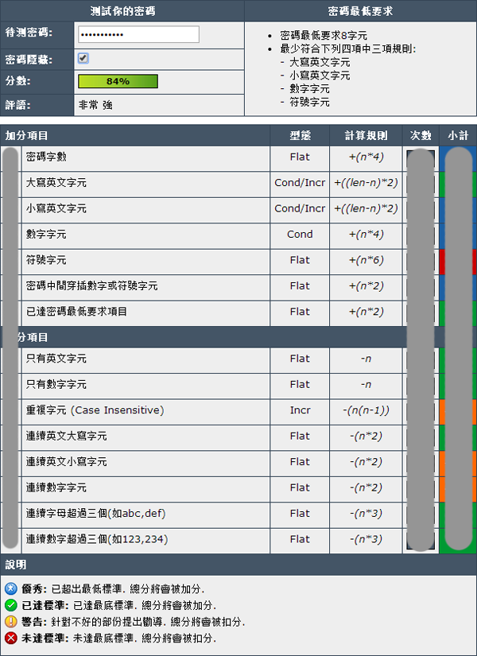
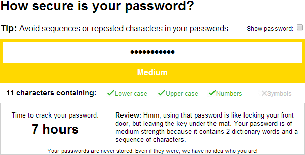
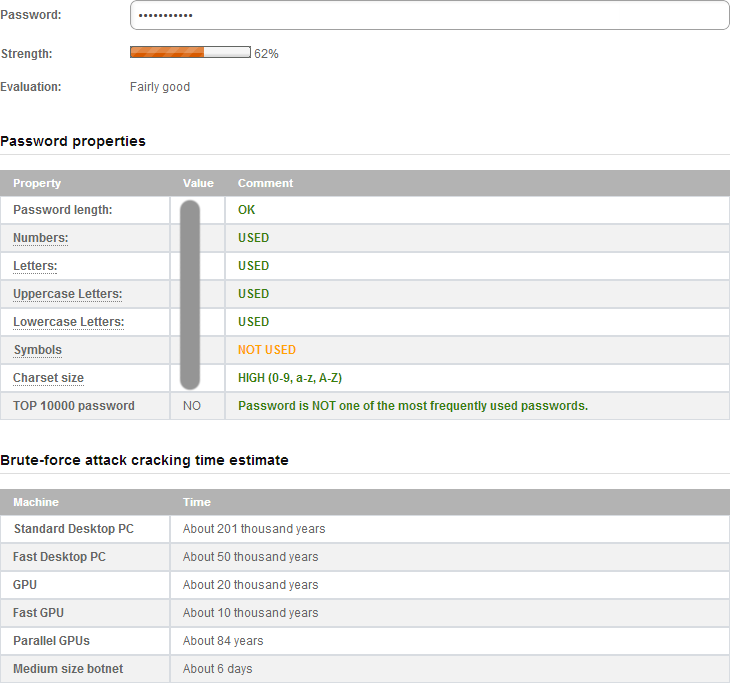
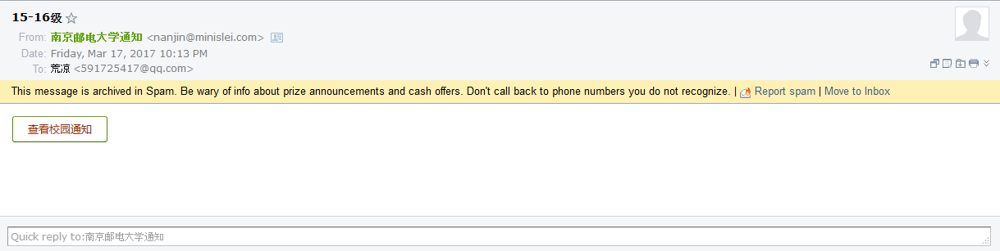
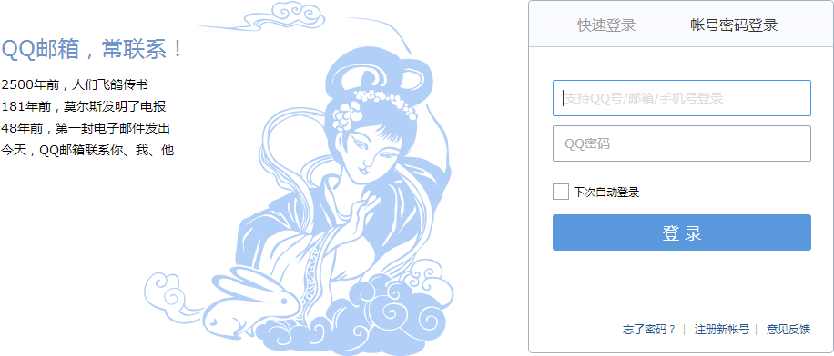
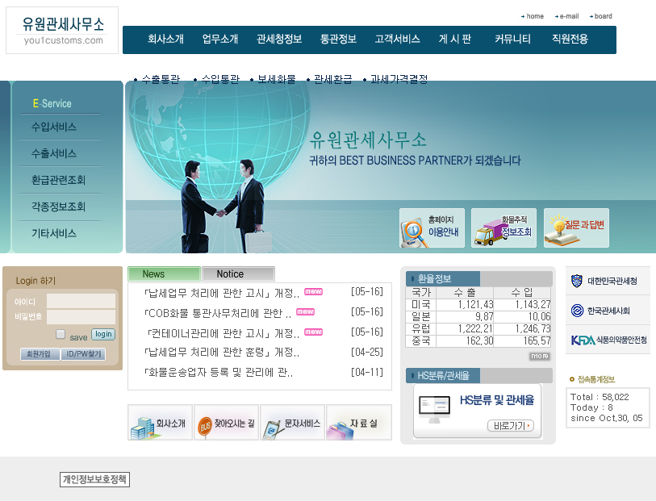
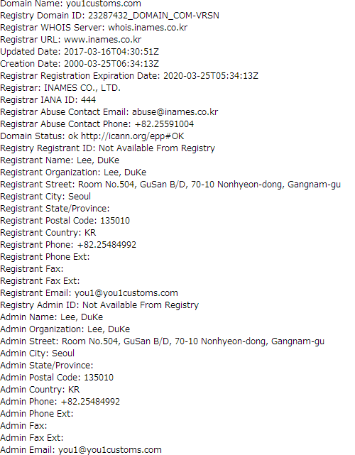
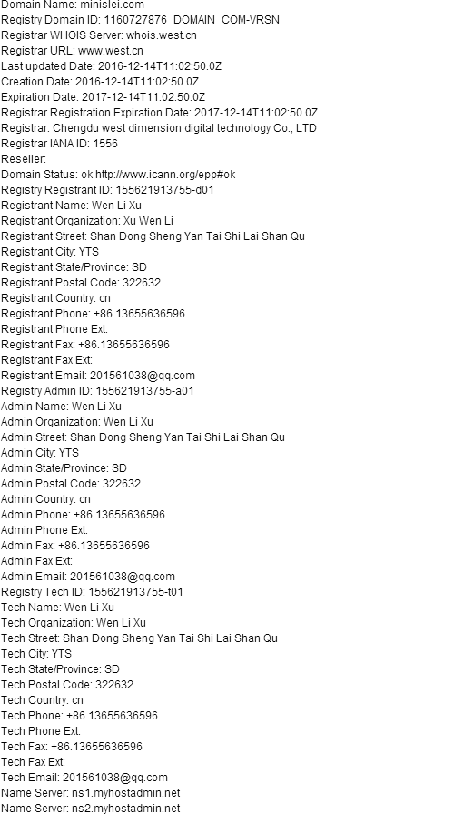

OK，關於前天QQ被盜的原因已經查清楚了。
首先，我的密碼，13位包括大小寫字元，靠暴力的難度可想而知。
具體可以參閱密碼強度測試｢英｣｢中｣和Password Strength Test這幾個網站，這個是我以前密碼測試的截圖。


7個小時的破解時間！我原本以為會更長。不過我又去了另一個網站Password Checker Online，得到了一張這樣的圖：

算了，不用在意這些細節。騰訊的反暴力機制是不會允許一直這樣子測試的。
而且，我相信沒有人會願意浪費這麼多的時間去破解我的密碼的。那麼，如果不是我密碼本身的問題，是怎麼回事呢？
我開始回想，我所有使用過QQ密碼的地方。終於，我想起來我曾經在3月份的時候收到的一封郵件：

查看校園通知這個按鈕，按下去之後，會跳轉到這個網頁：
http://you1customs.com/baidu/baiduck.htm?qq.com?x=dXNlcj1FOWRRUWJ0ZUlPRg==&index2=1
現在已經沒有辦法打開了，打開後會跳轉到百度的網頁。而那個時候，打開後大概是跳到一個這樣的網頁：

那個時候，我也沒有太注意，於是就很輕易的把自己的帳號和密碼輸入了進去。
現在想想，那個時候自己真的是太大意了！
而you1customs.com這個網站是這個樣子：

我看到後就矇了。
查詢了一番，這真的是一個韓國的網站。順帶一吐槽，工业和信息化部ICP/IP地址/域名信息备案管理這個系統真的好垃圾。下面是用阿里云域名查询查詢到的信息：

Registrant City: Seoul，翻譯成中文就是，注册城市：首尔。
就目前，you1customs.com也沒有baidu這個分支了。
那個地址後面的qq.com?x=dXNlcj1FOWRRUWJ0ZUlPRg==&index2=1應該就是……
好吧，說真的，我不懂，還請懂的人幫忙分析一下。
那麼，給我發信件的人，nanjin@minislei.com是誰呢？
我再查一下：

哼哼~~~
| Wen Li xu | 13655636596 | 山東 | 成都西维数字科技有限公司 |
求個黑客小組幫我轟炸一波，認識黑客的人請介紹黑客給我｢不是說笑！｣。
如果我的推測沒有錯的話，這個犯人也是辛苦了。取得了我的密碼之後，並沒有馬上登陸我帳號進行詐騙，而是一直在等待，等到前天，我剛好不在線的時候，才開始動手。如果不是記性好，我大概都忘記了我還有在這個油箱裡面輸入過帳號和密碼的事。
那麼，我帳號被盜的事情就先告一段落了，請各位好友以後輸入密碼時，一定要注意查看網頁的真偽，不要輕易相信電子郵件，別讓我的悲劇再次發生。如果不慎在釣魚網站輸入了帳號和密碼，請務必在第一時間更改密碼，以免帶來不必要的麻煩。
你們以為事情就這樣子結束了？太天真了！我會繼續對我帳號失竊的事情繼續調查下去的，直到我把所有的來龍去脈都弄清楚。
不慎輸入過密碼的人，遠不止我一個，謀劃盜號計畫的，也遠不止一個人。我會傾自己的全力，爭取讓這樣的事情不再發生第二次。